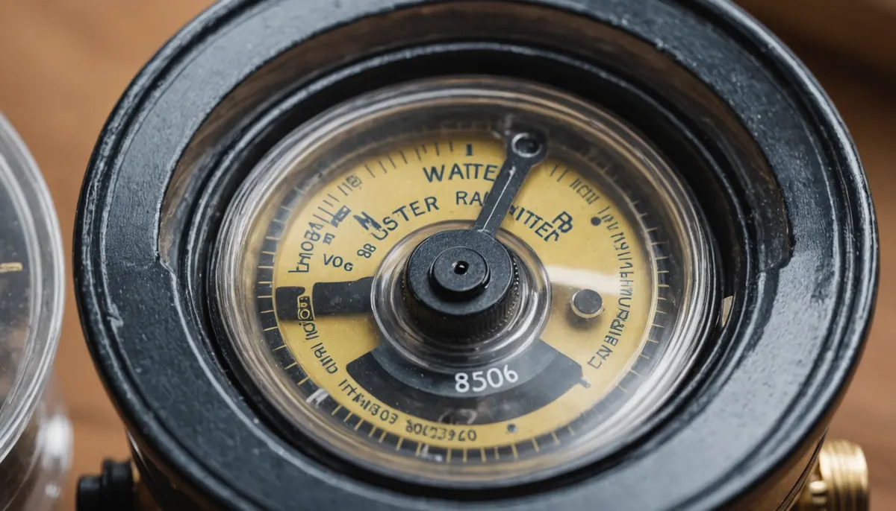

Water leaks can wreak havoc on homes if they're not spotted in time. They can result in structural damage, mold growth, and costly repairs. For homeowners, knowing how to detect water leaks is crucial to maintaining a safe living environment. In this guide, we will cover key signs to look out for and effective methods to identify water leaks in your home.
Water Meter Checks
Water meter checks are one of the simplest ways to spot leaks. This method is easy for any homeowner to do.
Start by turning off all water-using appliances and faucets in your home. Then, check your water meter. If it continues moving after you've shut off the water, there’s a strong likelihood you have a leak.
Here’s how you can verify this:
- Take an initial reading from your water meter.
- Wait for two hours without using any water.
- Take a second reading. If the numbers have changed, you have a leak somewhere.
According to experts, even a small leak can waste around 10,000 gallons of water per year, leading to increased bills and potential water damage.
Monitoring Your Water Bill
Another effective method to spot leaks is to keep a close eye on your water bill. If you notice a sudden spike without a clear reason—like increased usage during summer months—it could indicate a leak.
For instance, if your bill increases by 20% compared to your last bill but your usage hasn’t changed, it’s time to investigate further.
Comparing bills month-to-month can reveal trends. If you identify a significant difference, consider whether your family size or usage patterns have remained the same. If not, it might be time to ask, “Do I have a water leak?”
Toilet Leak Detection
Toilets are notorious culprits for leaks, but fortunately, checking for one is easy.
To perform a simple test, add a few drops of food coloring into the toilet tank. Wait about 20 to 30 minutes without flushing. If the color seeps into the bowl, your toilet has a leak that needs immediate attention.
Research shows that a leaking toilet can waste more than 200 gallons of water per day, costing homeowners up to $600 a year in water bills.
Visual Inspections
Conducting visual inspections around your home is another effective method to identify leaks. Look for:
- Water stains on ceilings, walls, and floors
- Damp spots and mold growth
- Peeling paint in moisture-prone areas
- Discolored Concrete indicates a possible moisture concern
Additionally, inspect pipes under sinks and behind toilets for visible dampness or leaks. If you notice any of these signs, take immediate action to prevent further damage.
Keeping an eye on these indicators can help you catch issues early, before they escalate into major repairs.
Listening for Leaks
Sometimes, the sound can reveal leaks. Pay close attention to your plumbing system when everything is turned off.
Listen for:
- Constant running water sounds
- Dripping or hissing noises
These sounds often indicate a leak in your plumbing. Identifying these noises early can help you pinpoint problems before they require extensive repairs.
Checking Water Pressure
A sudden drop in water pressure can also signal a potential leak.
You can assess your water pressure with a simple gauge available at most hardware stores. Here’s how:
- Attach the gauge to a tap.
- Turn on the water and read the pressure.
If the pressure is significantly lower than normal, it might be worth investigating for leaks.
Outdoor Inspections
Don't neglect the outside of your home. Check outdoor faucets and irrigation systems for leaks, which often go unnoticed.
You can look for signs like overly lush patches of grass, which might indicate an underground leak. Ensuring that your outdoor areas are regularly inspected is key to detecting leaks before they create more serious issues.
Important Considerations
Hidden Leaks
Be aware that some leaks aren't visible. They may be hidden behind walls or under floors, making them hard to detect.
If you suspect a leak but can't find it, it’s wise to call a professional plumber at Angle Stop Plumbing. Our experts have specialized tools that can help locate difficult leaks, preventing further damage.
Professional Assistance
If finding a leak is challenging, consider professional help. Skilled plumbers can use advanced methods like thermal imaging or acoustic detection to quickly locate leaks.
Investing in professional inspections can save you money in the long run by addressing leaks before they become serious issues.
Regular Maintenance
Beyond detection methods, routine maintenance of your plumbing systems is vital. Schedule regular checks and repairs by calling Angle Stop Plumbing to ensure everything functions properly.
Taking proactive measures can significantly reduce the risk of water leaks and prevent the costly damages that can follow.
Final Thoughts
Detecting water leaks early is crucial for homeowners aiming to protect their properties. By using methods like water meter checks, monitoring bills, conducting visual inspections, and assessing water pressure, you can quickly identify leaks before they escalate into major problems.
Regular inspections and timely professional help by Angle Stop Plumbing are vital for maintaining a safe and dry home. With vigilance and proactive strategies, homeowners can ensure their living spaces remain secure and manageable.

By following these practical tips, homeowners can effectively tackle water leak concerns, safeguard their homes, and enjoy peace of mind knowing they are preventing costly damages.